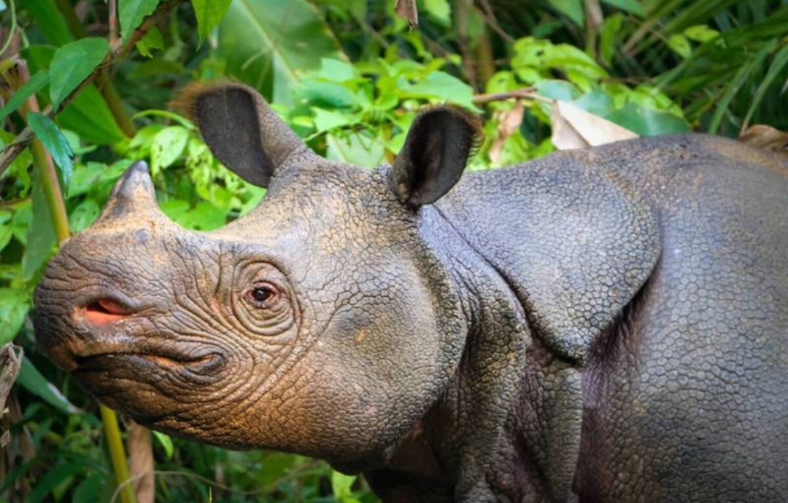

Tentang Badak Jawa
Badak Jawa dulu tersebar luas di Asia Selatan dan Asia Tenggara, tetapi sebagian besar wilayah jelajahnya hilang akibat perburuan dan hilangnya habitat.[2] Badak Jawa terakhir di daratan Asia Tenggara ditembak pemburu di Vietnam pada 2010.[1] Kini spesies ini hanya hidup di Indonesia, yaitu di Taman Nasional Ujung Kulon, Jawa.[3]

Habitat dan sebaran
Populasi liar badak Jawa satu-satunya berada di Taman Nasional Ujung Kulon.[2] Taman nasional ini juga rumah bagi 29 spesies mamalia lain, termasuk macan tutul Jawa yang berstatus Critically Endangered dan banteng yang berstatus Endangered.[4]
Tanaman palem arenga yang bersifat invasif tumbuh di dalam taman nasional dan mengurangi pakan badak. Pengendaliannya memulihkan pakan dan menambah daya dukung taman nasional bagi populasi badak.[1]

Peta lokasi habitat
Peta 1. Lokasi Taman Nasional Ujung Kulon, habitat terakhir badak Jawa, dibuat dengan Google My Maps. Data lokasi mengacu pada sumber [3].
Populasi
Angka populasi berbeda-beda tergantung sumbernya. Batang di bawah dibuat terhadap skala 100 individu.
Perkiraan turun dari 76 menjadi sekitar 50 individu setelah perburuan.[7] Meski begitu, kamera jebak merekam kelahiran anak badak di Ujung Kulon pada Februari 2026.[8]
Status menurut IUCN
Daftar Merah IUCN membagi spesies ke dalam sembilan kategori.[9] Critically Endangered adalah kategori risiko tertinggi sebelum kepunahan.[7]
Ancaman utama:
Perburuan. Kelompok pemburu mengaku membunuh 26 badak Jawa di Ujung Kulon pada 2019–2023.[3]
Bencana alam. Karena seluruh populasi berada di satu kawasan, satu bencana besar bisa memusnahkan spesies ini. Kawasan tersebut rentan terhadap gempa dan tsunami.[6] Letusan Gunung Anak Krakatau di dekat habitat pernah memicu kekhawatiran, tetapi badak dilaporkan aman.[2]

Strategi pelestarian
Strategi berikut disusun dari upaya konservasi pada sumber yang dikutip.
- Perketat patroli dan pemantauan
Taman Nasional Ujung Kulon memantau induk dan anak badak serta seluruh populasi lewat patroli, teknologi, dan pengelolaan habitat.[8]
- Kendalikan palem arenga
Mengendalikan tanaman invasif ini memulihkan pakan badak dan menambah daya dukung taman nasional.[1]
- Kelola genetik populasi kecil
Indonesia mulai memindahkan badak antar-area di dalam Ujung Kulon untuk mengelola populasi kecil dengan keragaman genetik terbatas.[2]
Daftar sumber
- Re:wild. Javan Rhinos. rewild.org
- Mongabay (September 2026). Javan rhinos survive eruption in Indonesia, but single habitat leaves species vulnerable. news.mongabay.com
- International Rhino Foundation. Javan rhino. rhinos.org
- IUCN World Heritage Outlook (2025). Ujung Kulon National Park, 2025 Conservation Outlook Assessment. rhinoresourcecenter.com
- Nhan Dan / ANTARA. Javan rhinoceros calf captured on camera in Ujung Kulon National Park. en.daibieunhandan.vn
- SciTechDaily. One of the World's Rarest Animals Is Facing a Devastating Problem: It Can't Find a Mate. scitechdaily.com
- Seasia.co (31 Agustus 2025). Javan and Sumatran rhinos are on the brink of extinction. seasia.co
- Voice of Indonesia / RRI (4 Februari 2026). Javan Rhino Calf Caught on Camera in Ujung Kulon National Park. rri.co.id
- Rainforest Rescue (9 September 2021). Indonesia: climate crisis threatens Komodo dragons (penjelasan sembilan kategori Daftar Merah IUCN). rainforest-rescue.org